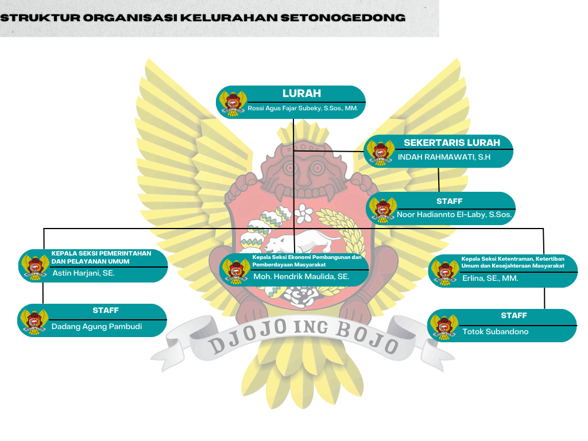

Tentang Setonogedong
Setonogedong adalah sebuah kelurahan di wilayah Kecamatan Kota, Kota Kediri, Provinsi Jawa Timur. Kelurahan Setonogedong berbatasan dengan Kelurahan Pakelan di utara, selatan, dan barat, serta Kelurahan Kemasan dan Balowerti di timur, Setonogedong terletak 1,5 km dari pusat pemerintahan Kota Kediri.
Struktur Organisasi Kelurahan
| No | Nama | Jabatan |
|---|---|---|
| 1 | Rossi Agus Fajar Subeky, S.Sos.,MM. | Lurah |
| 2 | Indah Rahmawati, SH. | Sekertaris Lurah |
| 3 | Astin Harjani, SE. | Kepala Seksi Pemerintahan dan Pelayanan Umum |
| 4 | Moh. Hendrik Maulida, SE. | Kepala Seksi Ekonomi Peembangunan dan Pemberdayaan Masyarakat |
| 5 | Erlina, SE., MM. | Kepala Seksi Ketentraman, Ketertiban Umum dan Kesejahteraan Masyarakat |
| 6 | Noor Hadianto El-Laby, S.Sos. | Staff |
| 7 | Dadang Agung Pambudi | Staff |
| 8 | Totok Subandono | Staff |
VISI & MISI
Visi
Mewujudkan Kelurahan Setono Gedong sebagai perangkat yang tetap konsisten melaksanakan tugas pemerintahan, pembangunan, pembinaan kemasyarakatan, dan pelayanan umum.
Misi
- Mewujudkan pelayanan prima kepada masyarakat.
- Mewujudkan terciptanya kelurahan sebagai ujung tombak dalam melaksanakan tugas pemerintahan, pembangunan, dan pembinaan masyarakat.
- Meningkatkan kemampuan aparatur pemerintahan.
Lembaga Kelurahan
Karang Taruna
Karang Taruna merupakan wadah pengembangan generasi muda nonpartisan, yang tumbuh atas dasar kesadaran dan rasa tanggung jawab sosial dari, oleh dan untuk masyarakat khususnya generasi muda di wilayah Kelurahan yang bergerak di bidang sosial.

LPMK
LPMK (Lembaga Pemberdayaan Masyarakat Kelurahan) adalah lembaga yang dibentuk di tingkat kelurahan untuk membantu lurah dalam perencanaan, pelaksanaan, dan pengawasan pembangunan yang berbasis partisipasi masyarakat.
PKK
Lembaga kemasyarakatan sebagai mitra kerja pemerintah dan organisasi kemasyarakatan lainnya, yang berfungsi sebagai fasiliator, perencana, pelaksana, pengendali dan penggerak pada masing-masing jenjang pemerintahan untuk terlaksanakannya program PKK.
DENAH WISATA RELIGI SETONO GEDONG

Denah Wisata Religi Makam Syekh Al Wasil
Wisata Religi Yang Berada Di Kelurahan Setono Gedong Yang Biasanya Di Kunjungi Yaitu Makam Auliya' Syekh Al Wasil Syamsudin (Mbah Wasil).Pada Denah Disamping Memberikan Petunjuk Arah Lokasi Makam dari Setiap Pintu Masuk. Pada Gambar Denah Disamping Menjelaskan Lokasi Makam Dan Bangunan lain di sekitar Wilayah Kawasan Wisata religi Yaitu:
- Makam Mbah Wasil
- Pendopo Auliya
- Makam Sunan Bagus & Panembahan Wiroasmoro
- Makam Wali Arba
- Makam Pangeran Sumende
- Kantor Kelurahan
- Makam Sri Amangkurat Mas III
- Makam Sunan Penanggung
- Makam Nyai Siti Fatimah
- Makam Sunan Demang
- Sumur Tiban
- Makam Sunan Kabul & Sunan Bakul
- Kediaman Juru Kunci